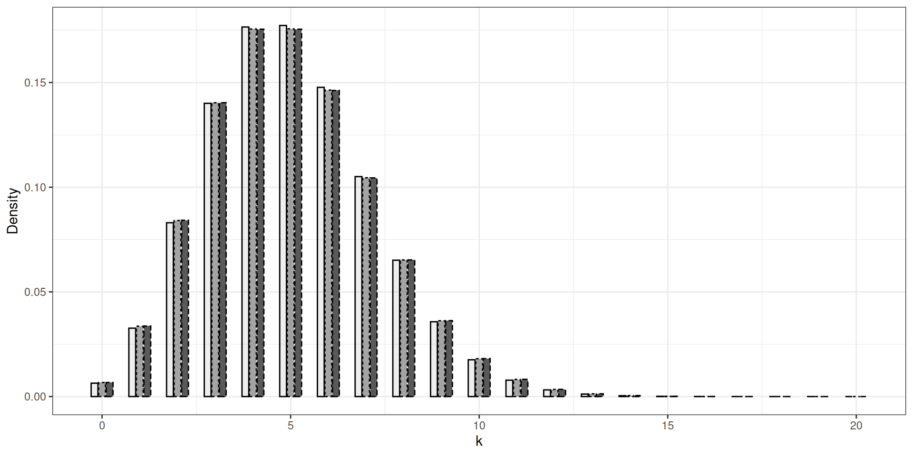
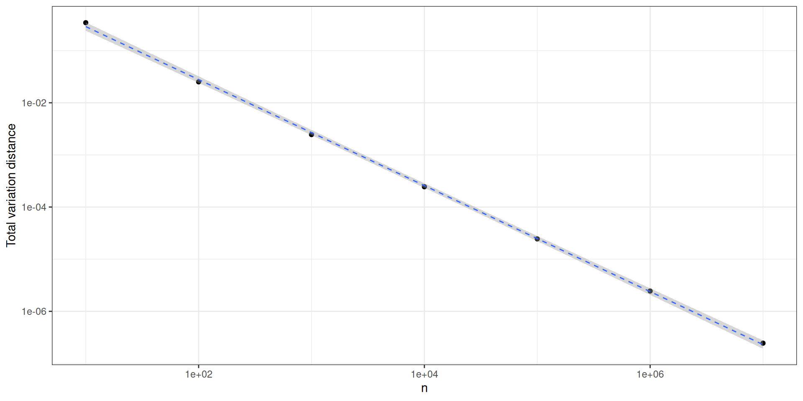
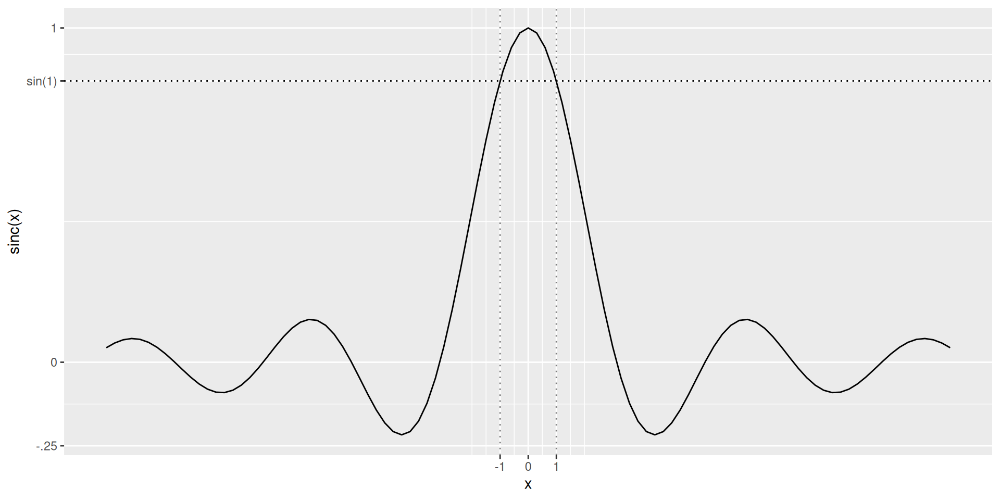
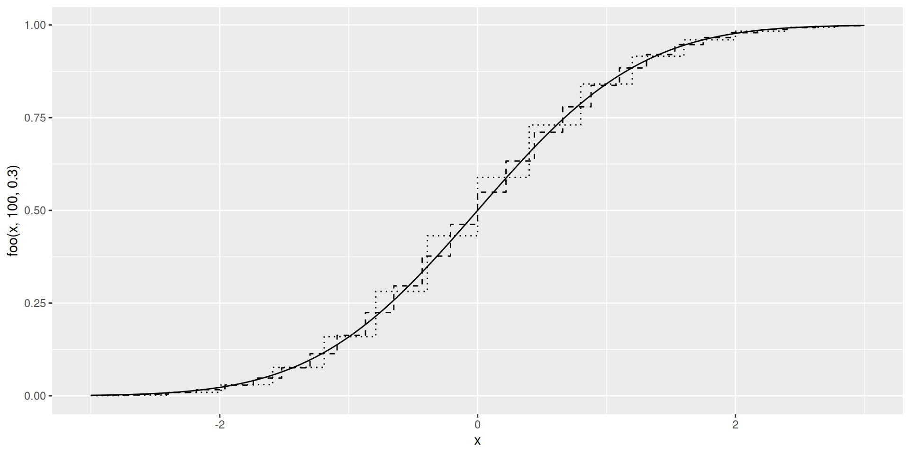

Probability X: Convergences
Stéphane Boucheron
2026-10-18
Motivation
PMFs (densities) of - Binom(250,0.02) (left) - Binom(2500,0.002)
PMFs (densities) of - Binom(250,0.02) (left) - Binom(2500,0.002) (middle) - Poisson(5) (right)
Graphical inspection of probability mass functions suggests that
As \(n\) grows, Binomial distributions with parameters \((n, \lambda/n)\) look more and more alike Poisson distribution with parameter \(\lambda\).
Comparing probability generating functions (PGFs) is even more compelling:
\[\lim_{n \uparrow \infty} \underbrace{(1 +\lambda(s-1)/n )^n}_{\text{PGF of} \operatorname{Binom}(n,\lambda/n)} = \underbrace{\exp(\lambda(s-1))}_{\text{PGF of} \operatorname{Poi}(\lambda)}\]
Convergence of Binomial PMFs towards Poisson PMFs
PMFs belong to \(\ell_1(\mathbb{N})\)
We can score the proximity between two probability distributions \(P, Q\) over \(\mathbb{N}\) by computing the \(\ell_1\) distance between the associated PMFs \(p\) and \(q\)
\[\sum_{k \in \mathbb{N}} \big|p(k) - q(k)\big|\]
Up to a factor of \(2\), this is the Total Variation distance between \(P\) and \(Q\)
For Binomials and Poisson distributions with respective parameters \((n, \lambda/n)\) and \(\lambda\), meaningful bounds can be derived at modest price
Law of rare events
Distance between
- Binom \((n, 5/n)\)
and
- Poisson \((5)\)
w.r.t. \(n\)

Logarithmic scales on both axes
We are talking about probability distributions, not random
We are talking about probability distributions, not random variables
We are not talking about Binomial and Poisson random variables leaving on the same probability space but on probability distributions of random variables leaving on possibly different probability spaces
The set of probability distributions over some measurable space \((\Omega, \mathcal{F})\) can be equipped with a variety of topologies
We shall focus on the topology defined by convergence in distribution also called weak convergence.
Roadmap
We introduce weak and vague convergences for sequences of probability distributions
Weak convergence induces the definition of convergence in distribution for random variables that possibly live on different probability spaces
The Portemanteau Theorem lists a number of alternative and equivalent characterizations of convergence in distribution.
Alternative characterizations are useful in two respects: they may be easier to check; they may supply a larger range of applications
We state and prove the Lévy continuity theorem
The Lévy continuity theorem relates convergence in distribution with pointwise convergence of characteristic functions
The Lévy continuity theorem could be one more line in the statement of the Portemanteau Theorem
But it stands out because it provides us with a concise proof of the Central Limit Theorem for normalized sums of centered i.i.d. random variables
Weak convergence, vague convergence
Weak convergence
Weak convergence of probability measures assesses the proximity of probability measures by comparing their action on a collection of test functions
Definition 1 (Weak convergence) A sequence of probability distributions \((P_n)_{n \in \mathbb{N}}\) over \(\mathbb{R}^k\) converges weakly towards probability distribution \(P\) (on \(\mathbb{R}^k\))
iff
for any bounded and continuous function \(f: \mathbb{R}^k \to \mathbb{R}\),
\[\lim_n \mathbb{E}_{P_n} [f] = \mathbb{E}_P [f]\]
\[P_n \rightsquigarrow P\]
The there is some flexibility in the choice
The there is some flexibility in the choice of the class of test functions
This choice is not unlimited
If we restrict the collection of test functions to continuous functions with compact support (which are always bounded), we obtain a different notion of convergence.
Vague convergence
Definition 2 (Vague convergence) A sequence of probability distributions \((P_n)_{n\in\mathbb{N}}\) over \(\mathbb{R}^k\) converges vaguely towards measure \(\mu\) (on \(\mathbb{R}^k\))
iff
for any continuous function \(f\) with compact support from \(\mathbb{R}^k \to \mathbb{R}\),
\[\lim_n \mathbb{E}_{P_n} [f] = \int f \mathrm{d}\mu\]
Warning
the limit measure \(\mu\) is not necessarily a probability measure
Example
Example 1 Consider the sequence of probability masses over the integers \((\delta_n)_{n \in \mathbb{N}}\).
This sequence converges vaguely towards the null measure
This sequence does not converge weakly
Exercise 1 (If a sequence of probability distributions over \(\mathbb{R}^k\) converg) If a sequence of probability distributions over \(\mathbb{R}^k\) converges vaguely towards a probability measure, does it also converge weakly towards this probability measure?
Convergence in distribution
A sequence of -valued random variables defined on
Definition 3 A sequence \((X_n)_{n \in \mathbb{N}}\) of \(\mathbb{R}^k\)-valued random variables defined on a sequence of probability spaces \((\Omega_n, \mathcal{F}_n, P_n)\) converges in distribution towards \(X \sim \mathcal{L}\)
if
\((P_n \circ X_n^{-1})_{n \in \mathbb{N}}\) is weakly convergent towards probability distribution \(\mathcal{L}\) over \((\mathbb{R}^k, \mathcal{B}(\mathbb{R}^k))\)
This is denoted by
\[X_n \rightsquigarrow X \qquad \text{or} \qquad X_n \rightsquigarrow \mathcal{L}\]
Important
The probability spaces are (often) defined implicitly
In order to check or use convergence in distribution, many equivalent characterizations are available.
Some of them are listed in the Portemanteau Theorem.
Portemanteau Theorem
Portemanteau Theorem
Theorem 1 (Portemanteau Theorem) A sequence of probability distributions \((P_n)_{n \in \mathbb{N}}\) on \(\mathbb{R}^k\) converges weakly towards a probability distribution \(P\) (on \(\mathbb{R}^k\)) iff one of the equivalent properties hold:
- For every bounded continuous function \(f\) from \(\mathbb{R}^k\) to \(\mathbb{R}\), the sequence \(\mathbb{E}_{P_n} [f]\) converges towards \(\mathbb{E}_P [f]\).
- For every bounded uniformly continuous function \(f\) from \(\mathbb{R}^k\) to \(\mathbb{R}\), the sequence \(\mathbb{E}_{P_n} [f]\) converges towards \(\mathbb{E}_P [f]\).
- For every bounded Lipschitz function \(f\) from \(\mathbb{R}^k\) to \(\mathbb{R}\), the sequence \(\mathbb{E}_{P_n} [f]\) converges towards \(\mathbb{E}_P [f]\).
- For every \(P\)-almost surely bounded and continuous function \(f\) from \(\mathbb{R}^k\) to \(\mathbb{R}\), the sequence \((\mathbb{E}_{P_n} [f])\) converges towards \(\mathbb{E}_P [f]\).
- For every closed subset \(F\) of \(\mathbb{R}^k\), \(\limsup P_n (F) \leq P(F).\)
- For every open subset \(O\) of \(\mathbb{R}^k\), \(\liminf P_n (O) \geq P(O).\)
- For every \(A \in \mathcal{B}(\mathbb{R})\) such that \(P(A^\circ) = P(\overline{A})\) (the boundary of \(A\) is \(P\)-negligible), \(\lim_n P_n(A)=P(A)\).
Proof
Proof. Implications \(1) \Rightarrow 2) \Rightarrow 3)\) are obvious.
Lévy’s continuity theorem entails that \(3) \Rightarrow 1)\).
\(4) \Rightarrow 1)\) is obvious.
That \(5) \Leftrightarrow 6)\) follows from the fact that the complement of a closed set is an open set
Proof
Proof. \(5)\) and \(6)\) imply \(7)\):
\[\limsup_n P_n(\overline{A}) \leq P(\overline{A}) = P(A^\circ) \leq \liminf_n P_n(A^\circ)\]
By monotony
\[\liminf_n P_n(A^\circ) \leq \liminf_n P_n (A) \leq \limsup_n P_n(A) \leq \limsup_n P_n (\overline{A})\]
Combining leads to
\[\lim_n P_n(A) = \liminf_n P_n (A) = \limsup_n P_n(A) = P(A^\circ) = P(\overline{A})\]
Proof
Proof. Let us check that \(3) \Rightarrow 5)\). Let \(F\) be a closed subset of \(\mathbb{R}^k\).
For \(x\in \mathbb{R}^k\), let \(\mathrm{d}(x,F)\) denote the distance from \(x\) to \(F\).
For \(m \in \mathbb{N}\), let \(f_m(x) = \big(1 - m \mathrm{d}(x, F)\big)_+\).
The function \(f_m\) \(m\)-is Lifchitz, lower bounded by \(\mathbb{I}_F\), and for every \(x \in \mathbb{R}^k\) \(\lim_m \downarrow f_m(x)= \mathbb{I}_F(x)\)
Weak convergence of \(P_n\) to \(P\) implies
\[\lim_n \mathbb{E}_{P_n} f_m = \mathbb{E}_P f_m\]
Proof \(3) \Rightarrow 5)\) (continued)
Proof (continued). Hence for every \(m \in \mathbb{N}\)
\[\limsup_n P_n(F) = \limsup_n \mathbb{E}_{P_n} \mathbb{I}_F \leq \lim_n \mathbb{E}_{P_n} f_m = \mathbb{E}_P f_m\]
Taking the limit on the right side leads to
\[\limsup_n P_n(F) = \limsup_n \mathbb{E}_{P_n} \mathbb{I}_F \leq \lim_m \downarrow \mathbb{E}_P f_m = \mathbb{E}_P \mathbb{I}_F =P (F)\]
(teaking the Monotone Converence Theorem)
Proof
Proof. Checking \(7) \Rightarrow 1)\)
Let \(f\) be a bounded continuous function. Assume w.l.o.g. that \(f\) is non-negative and upper-bounded by \(1\). Recall that for each \(\sigma\)-finite measure \(\mu\)
\[\int f \mathrm{d}\mu = \int_{[0,\infty)} \mu\{f > t\} \mathrm{d}t\]
This holds for all \(P_n\) and \(P\). Hence
\[\mathbb{E}_{P_n} f = \int_{[0,\infty)} P_n \{ f > t \} \mathrm{d}t\]
As \(\overline{\{ f > t\}} = \{f \geq t\}\)
\[\overline{\{ f > t\}} \setminus \{ f > t\}^\circ = \{f = t\}\]
Proof
Proof. The set of values \(t\) such that \(P \{ f = t\}>0\) is at most countable and thus Lebesgue-negligible
Let \(E\) be its complement. For \(t\in E\), \(\lim_n P_n\{ f> t\} = P\{f >t\}\).
\[\begin{array}{rl} \lim_n \mathbb{E}_{P_n} f & = \lim_n \int_{[0, 1]} P_n \{ f >t \} \mathrm{d}t \\ & = \lim_n \int_{[0, 1]} P_n \{ f >t \} \mathbb{I}_E(t) \mathrm{d}t \\ & = \int_{[0, 1]} \lim_n P_n \{ f >t \} \mathbb{I}_E(t) \mathrm{d}t \\ & = \int_{[0,1]} P\{f >t\} \mathbb{I}_E(t) \mathrm{d}t \\ & = \int_{[0,1]} P\{f >t\} \mathrm{d}t \\ & = \mathbb{E}_P f\end{array}\]
Exercise 2 (complete the proofs) complete the proofs
Illustration
\(X_n \sim P_n = \delta_{1/n}\) and \(X \sim \delta_0\)
\(X_n ⇝ X\)
Closed set \(F = (-\infty, 0]\), \[P_n(F) = 0, \quad \forall n\] but \(P(F) = 1 \geq \limsup_n P_n(F)=0\)
Open set \(O = ]0, \infty)\), \[P_n(O) = 1, \quad \forall n\] but \(P(O) = 0 \leq \liminf_n P_n(O)=1\)
For probability measures over , weak convergence is
For probability measures over \((\mathbb{R}, \mathcal{B}(\mathbb{R}))\), weak convergence is determined by cumulative distribution functions. This is sometimes taken as a definition of weak convergence in elementary books.
Corollary 1 A sequence of probability measures defined by their cumulative distribution functions \((F_n)_n\) converges weakly towards a probability measure defined by cumulative distribution function \(F\)
iff
\[\lim_n F_n(x) = F(x)\]
at every \(x\) which is a continuity point of \(F\)
Consequence of 7) in the statement of the Portemanteau Theorem: if \(x\) is a continuity point of \(F\), then
\[F(x) = P(-\infty, x] = P(-\infty, x[ = P(-\infty, x]^{\circ} = \lim_{x_n \uparrow x} F(x_n)\]
Prove this proposition
For probability measures over \((\mathbb{R}, \mathcal{B}(\mathbb{R}))\), weak convergence is also determined by quantile functions
Theorem 2 A sequence of probability measures defined by their quantile functions \((F^\leftarrow_n)_n\) converges weakly towards a probability measure defined by quantile function \(F^\leftarrow\)
iff
\[\lim_n F_n^\leftarrow(x) = F^\leftarrow(x)\]
at every \(x\) which is a continuity point of \(F^\leftarrow\)
Exercise 3 (Prove this proposition) Prove this proposition
Almost sure representation
Proposition 1 (Almost sure representation) If \((X_n)_n ⇝ X\),
then
there exists \((\Omega, \mathcal{F}, P)\) with random variables \((Y_n)_n\) and \(Y\), such that:
- \(\forall n, X_n \sim Y_n\),
- \(X \sim Y\),
- and
\[Y_n \to Y \qquad P\text{-a.s.}\]
Warning
The random variables \((X_n)_n\) and \(X\) may live on different probability spaces.
If variables \(X_n\) are real-valued, the proposition follows from characterization of weak convergence by simple convergence of quantile functions
Proof (for real-valued random variables)
Proof. Let \(\Omega= [0,1], \mathcal{F}=\mathcal{B}(\mathbb{R})\) and \(\omega\) be uniformly distributed over \(\Omega = [0,1]\). Let
\[Y_n = F_n^\leftarrow(\omega) \text{ and } Y = F^\leftarrow(\omega)\]
Then for each \(n\),
\[P \Big\{ Y_n \leq t \Big\} = P\Big\{\omega : F_n^\leftarrow(\omega) \leq t \Big\} = P\Big\{\omega : \omega \leq F_n(t) \Big\} = F_n(t)\]
Proof (continued)
Proof (continued). As a non-decreasing function has at most countably many discontinuities,
\[P\Big\{\omega : F^\leftarrow\text{ is continuous at }\omega \Big\}=1\]
If \(F^{\leftarrow}\) is continuous at \(\omega\), by the quantile characterization of weak convergence,
\[\lim_n F_n^{\leftarrow}(\omega) = F^\leftarrow(\omega)\]
\[\text{This translates to }\quad P \Big\{\omega : \lim_n Y_n(\omega) =Y(\omega) \Big\} = 1\]
Check it
Proposition 2 Let \((X_n)_n, X\) be random variables over \((\Omega, \mathcal{F}, P)\)
If \((X_n)_n \stackrel{P-\text{a.s.}}{\longrightarrow} X\),
then
\[ X_n \rightsquigarrow X\]
Exercise 4 (Check it) Check it
Lévy continuity theorem
Source
Lévy’s continuity theorem
Theorem 3 (Lévy’s continuity theorem) A sequence \((P_n)_n\) of probability distributions over \(\mathbb{R}^d\) converges weakly towards a probability distribution \(P\) over \(\mathbb{R}^d\)
iff
the sequence of characteristic functions converges pointwise towards the characteristic function of \(P\).
The Theorem asserts that weak convergence of probability
Warning
The Theorem asserts that weak convergence of probability measures is characterized by a very small subset of bounded continuous functions.
To warrant weak convergence of \((P_n)_n\) towards \(P\) it is enough to check that \(\mathbb{E}_{P_n}f \to \mathbb{E}_Pf\) for functions
\[f \in \{ \cos(t \cdot), \sin(t \cdot) : t \in \mathbb{R} \}\]
These functions are bounded and infinitely many times differentiable.
Let and live on the same probability space.
Lemma 1 Let \((X_n)_n, X\) and \(Z\) live on the same probability space.
If
\[\forall \sigma>0, \quad X_n + \sigma Z \rightsquigarrow X+\sigma Z\]
then
\[X_n \rightsquigarrow X\]
Proof
Proof. Let \(h\) be bounded by \(1\) and \(1\)-Lipschitz
\[\begin{array}{rl}\Big| \mathbb{E} h(X_n) -h(X) \Big| & \leq \Big| \mathbb{E} h(X_n) - h(X_n + \sigma Z) \Big| \\ & \quad + \Big| \mathbb{E} h(X_n + \sigma Z) - h(X + \sigma Z) \Big| \\ & \quad + \Big| \mathbb{E} h(X + \sigma Z) - h(X) \Big|\end{array}\]
The first and third summand can be handled in the same way.
Proof (continued)
Proof (continued). Let \(\epsilon >0\),
\[\begin{array}{rl}\Big| \mathbb{E} h(X_n) - h(X_n + \sigma Z) \Big| & \leq \Big| \mathbb{E} (h(X_n) - h(X_n + \sigma Z)) \mathbb{I}_{\sigma |Z|>\epsilon} \Big| \\ & \qquad + \Big| \mathbb{E} (h(X_n) - h(X_n + \sigma Z)) \mathbb{I}_{\sigma |Z|\leq\epsilon} \Big| \\ & \leq 2 P\{\sigma |Z|>\epsilon\} + \epsilon\end{array}\]
Proof (continued)
Proof (continued). Combining the different bounds leads to
\[\begin{array}{rl} \Big| \mathbb{E} h(X_n) -h(X) \Big| & \leq 4 \underbrace{P\{\sigma |Z|>\epsilon\}}_{(a)} + 2\epsilon + \underbrace{\Big| \mathbb{E} h(X_n + \sigma Z) - h(X + \sigma Z) \Big|}_{(b)}\end{array}\]
- tends to \(0\) as \(n \uparrow \infty\) ( \(X_n + \sigma Z \rightsquigarrow X+\sigma Z\) )
- tends to \(0\) as \(\sigma \downarrow 0\)
Hence
\[\limsup_n \Big| \mathbb{E} h(X_n) - h(X_n + \sigma Z) \Big| \leq 2\epsilon\]
Scheffé’s Lemma
Lemma 2 (Scheffé’s Lemma) Let \((P_n)_n\) be a sequence of absolutely continuous probability distributions with densities \((f_n)_n\).
Assume that densities \((f_n)_n\) converge pointwise towards the density \(f\) of some probability distribution \(P\), then
\[P_n \rightsquigarrow P\]
Proof
Proof. \[\begin{array}{rl} \int_{\mathbb{R}} |f_n(x) - f(x)| \mathrm{d}x & = \int_{\mathbb{R}} (f(x) - f_n(x))_+ \mathrm{d}x + \int_{\mathbb{R}} (f(x) - f_n(x))_- \mathrm{d}x \\ & = 2 \int_{\mathbb{R}} (f(x) - f_n(x))_+ \mathrm{d}x\end{array}\]
Observe
- \((f - f_n)_+ \leq f\) which belongs to \(\mathcal{L}_1(\mathbb{R}, \mathcal{B}(\mathbb{R}), \text{Lebesgue})\)
- The sequence \(((f - f_n)_+)_n\) converges pointwise to \(0\)
By the dominated convergence theorem, \(\lim_n \int_{\mathbb{R}} |f_n - f| \mathrm{d}x =0\)
For any \(A \in \mathcal{B}(\mathbb{R})\),
\[P_n(A) - P(A) = \int_{\mathbb{R}} \mathbb{I}_A (f_n -f) \leq \int_{\mathbb{R}} |f_n-f|\]
We proved more than weak convergence: \(\lim_n \sup_{A \in \mathcal{B}(\mathbb{R})} |P_n(A) - P(A)| )=0\)
Proof of the continuity theorem
Proof. Assume the characteristic functions of \((X_n)_n\) converges pointwise towards the characteristic function of \(X\).
Let \(Z\) be a standard Gaussian random variable, independent of all \((X_n)_n\) and of \(X\).
For \(\sigma>0\), the distributions of \(X_n + \sigma Z\) and \(X + \sigma Z\) have densities that are uniquely determined by the characteristic functions of \(X_n\) and \(X\).
By dominated convergence, the densities of \(X_n + \sigma Z\) converge pointwise towards the density of \(X + \sigma Z\).
By Scheffé’s Lemma, \(X_n + \sigma Z \rightsquigarrow X + \sigma Z\) for all \(\sigma>0\)
This entails that \(X_n \rightsquigarrow X.\)
Refining the continuity theorem
In some situations, we can prove that a
In some situations, we can prove that a sequence of characteristic functions converges pointwise towards some function, but we have no candidate for the limiting distribution.
The question arises whether the pointwise limit of characteristic functions is the characteristic function of some probability distribution or something else.
The answer may be negative: if \(P_n = \mathcal{N}(0, n)\), the sequence of characteristic functions is \(\big(t \mapsto \exp(-nt^2/2)\big)_n\) which converges pointwise to \(0\) except at \(0\) where it is equal to \(1\) all along.
The limit is not the characteristic function of any probability measure: it is not continuous at \(0\).
Lévy’s continuity theorem, second form
The next Theorem settles the question.
Theorem 4 (Lévy’s continuity theorem, second form) A sequence \((P_n)_n\) of probability distributions over \(\mathbb{R}\) converges weakly towards a probability distribution over \(\mathbb{R}\)
iff
the sequence of characteristic functions converges pointwise towards a function that is continuous at \(0\)
The limit function is the characteristic function of some probability distribution.
Uniform tightness
Definition 4 (Uniform tightness) A sequence of Probability measures \((P_n)_n\) over \(\mathbb{R}\) is uniformly tight
if
for every \(\epsilon >0\), there exists some compact \(K \subseteq \mathbb{R}\) such that
\[\forall n, \qquad P_n(K) \geq 1 - ϵ\]
To establish uniform tightness of , it is
To establish uniform tightness of \((P_n)_n\), it is enough to show that for every \(\epsilon>0\), there exists some \(n_0(\epsilon)\), and some compact \(K \subseteq \mathbb{R}\) such that
\[\forall n \geq n_0(\epsilon), \qquad P_n(K) \geq 1 - ϵ\]
Prokhorov-Le Cam
We admit the (important) next Theorem
Theorem 5 (Prokhorov-Le Cam) If \((P_n)_n\) is a uniformly tight sequence of probability measures on \(\mathbb{R}\),
then
there is some subsequence \((P_{n(k)})_{k \in \mathbb{N}}\) such that \(P_{n(k)} ⇝ P\) for some probability measure \(P\)
Source <iframe
Source <iframe
Uniform tightness Lemma
Lemma 3 (Uniform tightness Lemma) Let \((P_n)_n\) be a sequence of probability distributions over \(\mathbb{R}\), with characteristic functions \(\widehat{F}_n\).
If the sequence \((\widehat{F}_n)_n\) converges pointwise towards a function that is continuous at \(0\)
then
the sequence \((P_n)_n\) is uniformly tight.
The proof of the truncation inequality takes advantage
The proof of the truncation inequality takes advantage on easy bounds satisfied by the \(\operatorname{sinc}\) function.
\[\forall t \in \mathbb{R} \setminus[-1,1]\]
\[\qquad \frac{\sin(t)}{t} \leq \sin(1) \leq \frac{6}{7}\]

Truncation Lemma
Lemma 4 (Truncation Lemma) Assume \(\widehat{F}\) is the characteristic function of some probability measure \(P\) on the real line,
then
\[\forall u>0, \quad \frac{1}{u}\int_0^u \big(1 - \operatorname{Re}\widehat{F}(v)\big) \mathrm{d}v \geq \frac{1}{7} P \Big[\frac{-1}{u}, \frac{1}{u}\Big]^c\]
Proof of Truncation Lemma
Proof. \[\begin{array}{rl}\frac{1}{u}\int_0^u \big(1 - \operatorname{Re}\widehat{F}_n(v)\big) \mathrm{d}v & = \frac{1}{u}\int_0^u \Big(\int_{\mathbb{R}} \big(1 - \cos(v w)\big)\mathrm{d}F(w) \Big)\mathrm{d}v \\ & = \int_{\mathbb{R}}\int_0^u \frac{1}{u} \Big( \big(1 - \cos(v w)\big) \mathrm{d}v \Big)\mathrm{d}F(w) \\ & = \int_{\mathbb{R}} \Big( 1 - \frac{\sin(uw)}{uw} \Big)\mathrm{d}F(w) \\ & \geq \int_{|uw| \geq 1} \Big( 1 - \frac{\sin(uw)}{uw} \Big)\mathrm{d}F_n(w) \\ & \geq (1- \sin(1)) P \Big[\frac{-1}{u}, \frac{1}{u}\Big]^c \,\end{array}\]
where the two inequalities follow from the bounds on the \(\operatorname{sinc}\) function.
Proof of Uniform tightness Lemma
Proof. Assume that the sequence \((\widehat{F}_n)_n\) converge pointwise towards a function \(\widehat{F}\) that is continuous at \(0\).
Note that \(\widehat{F}_n(0)=1\) for all \(n\), hence, trivially, \(1 =\lim_n \widehat{F}_n(0) = \widehat{F}(0)\).
As \(|\operatorname{Re}\widehat{F}_n(t)|\leq 1\), \(|\operatorname{Re}\widehat{F}(t)|\leq 1\) also holds.
Fix \(ϵ>0\), as \(\widehat{F}\) is continuous at \(0\), for some \(u>0\), for all \(v \in [-u,u]\),
\[0 \leq 1- \operatorname{Re}\widehat{F}(u) \leq \epsilon/2\]
Hence, 0 ^u (1 -
Hence,
\[0 \leq \frac{1}{u}\int_0^u \big(1 - \operatorname{Re}\widehat{F}(v)\big) \mathrm{d}v \leq \epsilon/2\]
By dominated convergence,
\[\lim_n \frac{1}{u}\int_0^u \big(1 - \operatorname{Re}\widehat{F}_n(v)\big) \mathrm{d}v= \frac{1}{u}\int_0^u \big(1 - \operatorname{Re}\widehat{F}(v)\big) \mathrm{d}v \leq \frac{\epsilon}{2}\]
For sufficiently large \(n\), \(0 \leq \frac{1}{u}\int_0^u \big(1 - \operatorname{Re}\widehat{F}_n(v)\big) \mathrm{d}v \leq \epsilon\).
By the truncation Lemma, for sufficiently large \(n\)
\[P_n \Big[\frac{-1}{u}, \frac{1}{u}\Big]^c \leq 7 ϵ\]
\((P_n)_n\) is uniformly tight
Proof of the second form of the continuity theorem
We combine the Uniform Tightness Lemma, the Prokhorov-Le Cam Theorem, and the first form of the Lévy continuity Theorem to establish the (full) Lévy continuity Theorem
Proof. Under the assumptions of the second form of the continuity Theorem,
\(\widehat{F}_n \rightarrow F\) with \(F\) continuous at \(0\)
By the Uniform Tightness Lemma, \((P_n)_n\) is uniformly tight
By the Prokhorov-Le Cam Theorem, there is - a probability measure \(P\) (with characteristic function \(\widehat{F}\)), and - a subsequence \((P_{n(k)})_{k \in \mathbb{N}}\) such that \(P_{n(k)} \rightsquigarrow P \text{ as } {k \to \infty}\)
Proof of the second form of the continuity theorem (continued)
Proof (continued). By the definition of weak convergence, \[P_{n(k)} \rightsquigarrow P \text{ as } {k \to \infty}\] entails \[\widehat{F}_{n(k)} \rightarrow \widehat{F}'' \text{ as } {k \to \infty}\] where \(\widehat{F}''\) is the characteristic function of \(P\)
As \(\widehat{F}_n \rightarrow \widehat{F}\), by the unicity of limits, \(\widehat{F}= \widehat{F}'\) and thus \(\widehat{F}\) is the characteristic function the probability distribution \(P\)
Finally, by the first form of the Levy continuity Theorem, \(P_{n}\rightsquigarrow P \text{ as }{n \to \infty}\).
@@WARN@@
All definitions and results in this section can be extended to the \(k\)-dimensional setting for all \(k \in \mathbb{N}\)
Relations between convergences
The alternative characterizations of weak convergence provided by
The alternative characterizations of weak convergence provided by the Portemanteau Theorem facilitate the proof of the next Proposition.
Convergence in probability implies convergence in distribution If
Proposition 3 Convergence in probability implies convergence in distribution
If \((X_n)_n\) is a sequence of RV over \((\Omega, \mathcal{F}, P)\) such that
\[X_n \stackrel{P-\text{probability}}{\longrightarrow} X \quad \Rightarrow \quad X_n \rightsquigarrow X\]
Proof
Proof. Assume \((X_n)_n\) converges in probability towards \(X\).
Let \(h\) be a bounded and Lipschitz function.
Without loss of generality, assume that
\[|f(x)|\leq 1 \quad \text{and} \quad |f(x)-f(y)|\leq \mathrm{d}(x,y) \qquad \forall x, y\]
Let \(\epsilon>0\)
\[\begin{array}{rl}\Big| \mathbb{E}h(X_n) - \mathbb{E}h(X) \Big| & = \Big| \mathbb{E}\Big[(h(X_n) - h(X) \mathbb{I}_{\mathrm{d}(X,X_n)> \epsilon}\Big] \\ & \qquad + \mathbb{E}\Big[(h(X_n) - h(X) \mathbb{I}_{\mathrm{d}(X,X_n)\leq \epsilon}\Big] \Big| \\ & \leq \mathbb{E}\Big[2 \mathbb{I}_{\mathrm{d}(X,X_n)> \epsilon} \Big] \\ \mathbb{E}\Big[ |h(X_n) - h(X)| \mathbb{I}_{\mathrm{d}(X,X_n)\leq \epsilon}\Big] \\ & \leq 2 P\big\{ \mathrm{d}(X,X_n)> \epsilon \big\} + \epsilon\end{array}\]
Proof (continued)
Proof (continued). Convergence in probability entails that
\[\limsup_n \Big| \mathbb{E}h(X_n) - \mathbb{E}h(X) \Big| \leq 0\]
\[\lim_n \Big| \mathbb{E}h(X_n) - \mathbb{E}h(X) \Big|=0\]
This is sufficient to establish convergence in distribution of \((X_n)_n\).
Central limit theorem
The Lévy Continuity Theorem is the conerstone of
The Lévy Continuity Theorem is the conerstone of a very concise proof the simplest version of the Central Limit Theorem (CLT)
Under square-integrability assumption, the CLT refines the Laws of Large Numbers.
The CLT states that as \(n\) tends to infinity, the fluctuations of the empirical mean \(\sum_{i=1}^n X_i/n\) around its expectation tends to be of order \(1/\sqrt{n}\) and, once rescaled, to be normally distributed.
Central Limit Theorem
Theorem 6 (Central Limit Theorem) Let \(\ldots, X_n, \ldots\) be i.i.d. with finite variance \(\sigma^2\) and expectation \(\mu\).
Let \(S_n = \sum_{i=1}^n X_i\).
\[\frac{1}{\sigma\sqrt{n}} \left({S_n} - n\mu \right) \rightsquigarrow \mathcal{N}\big(0, 1\big)\]
Proof
Proof. \(\widehat{F}\) denote the characteristic function of the (common) distribution of the random variables \(((X_i-\mu)/\sigma)_i\).
The centering and square integrability assumptions imply that
\[\widehat{F}(t) = \widehat{F}(0) +\widehat{F}'(0) t + \frac{\widehat{F}^{\prime\prime}(0)}{2} t^2 + t^2 R(t) = 1 - \frac{t^2}{2} + t^2R(t)\]
where \(\lim_{t \to 0} R(t)=0\).
Proof (continued)
Proof (continued). Let \(\widehat{F}_n\) denote the characteristic function of \(\frac{1}{\sigma\sqrt{n}} \left({S_n} - n\mu \right)\).
Fix \(t \in \mathbb{R}\),
\[\widehat{F}_n(t) = \Big(\widehat{F}(t/\sqrt{n})\Big)^n= \Big(1 - \frac{t^2}{2n} + \frac{t^2}{n} R(t/\sqrt{n})\Big)^n\]
As \(n\to \infty\),
\[\lim_n \Big(1 - \frac{t^2}{2n} + \frac{t^2}{n} R(t/\sqrt{n})\Big)^n = \mathrm{e}^{- \frac{t^2}{2}}\]
The conditions in the Theorem statement allows for
Warning
The conditions in the Theorem statement allows for a short proof
They are by no mean necessary
The summands need not be identically distributed.
The summands need not be independent.
A version of the Lindeberg-Feller Theorem states that under mild assumptions, centered and normalized sums of independent square-integrable random variables converge in distribution towards a Gaussian distribution.
Consider the number \(Z_n\) of cycles in a random permutation over \(1, \ldots, n\)
\[Z_n \sim \sum_{i=1}^n Y_i \qquad \text{with}\quad Y_i \sim \operatorname{Be}(1/i)\]
and
\[\frac{1}{\sqrt{H_n}}\left(Z_n - H_n\right) ⇝ \mathcal{N}(0,1)\]
with \(H_n = \sum_{i=1}^n 1/i\)
De Moivre CLT
De Moivre CLT illustrated

Pointwise convergence of CDFs towards the Gaussian CDF of \(\mathcal{N}(0,1)\) (plain line)
The dotted and the dashed lines represent the CDF of
\[\frac{(X_n -np)}{\sqrt{n(p*(1-p))}}\]
where
\[X_n \sim \text{Binom}(n,p)\]
for \(p=.3\) and \(n=30 \text(dotted), 100 \text(dashed)\).
Cramer-Wold device
So far, we have discussed characteristic functions for
So far, we have discussed characteristic functions for real valued random variables.
Characteristic functions can also be defined for vector-valued random variables.
If \(X\) is a \(\mathbb{R}^k\)-valued random variable, its characteristic function maps \(\mathbb{R}^k\) to \(\mathbb{C}\)
\[\begin{array}{rl}\mathbb{R}^k & \to \mathbb{C} \\ t & \mapsto \mathbb{E}\mathrm{e}^{i \langle t, X\rangle}\end{array}\]
Cramer-Wold device
The importance of multivariate characteristic functions is reflected in the next device which proof is left to the reader.
It consists in the adapting the proof of the injectivity Theorem
Theorem 7 (Cramer-Wold device) The distribution of a \(\mathbb{R}^k\)-valued random vector \(X = (X_1, \ldots, X_k)^T\) is completely determined by the collection of distributions of univariate random variables
\[\langle t, X\rangle =\sum_{i=1}^n t_i X_i \text{ where } (t_1, \ldots, t_n)^T \in \mathbb{R}^n\]
The Cramer-Wold device provides a short path to
The Cramer-Wold device provides a short path to the Multivariate Central Limit Theorem
Theorem 8 Let \(X_1, \ldots, X_n, \ldots\) be i.i.d. vector valued random variables with finite covariance \(\Gamma\) and expectation \(\mu\).
Let \(S_n = \sum_{i=1}^n X_i\).
\[\sqrt{n} \left(\frac{S_n}{n} - \mu \right) \rightsquigarrow \mathcal{N}\big(0, \Gamma\big)\]
Weak convergence and transforms
We introduced different characterizations of probability distributions:
We introduced different characterizations of probability distributions:
- probability generating functions,
- Laplace transforms,
- Fourier transforms (characteristic functions),
- cumulative distribution functions,
- quantiles functions.
Within their scope, all those transforms are convergence determining: if a sequence of probability distributions converges weakly, so does (pointwise) the corresponding sequence of transforms, at least at the continuity points of the limiting transform.
In the next two theorems, each random variable is assumed to live on some (implicit) probability space.
A sequence of non-negative random variables converges in
Theorem 9 A sequence of non-negative random variables \((X_n)_n\) converges in distribution towards the non negative random variable \(X\) iff the sequence of Laplace transforms converges pointwise towards the Laplace transform of the probability distribution of \(X\).
The proof parallels the derivation of the continuity Theorem
As probability generating functions allows us to recover
As probability generating functions allows us to recover Laplace transforms, the next theorem is a special case of the statement concerning Laplace transforms.
Theorem 10 A sequence of integer-valued random variables \((X_n)_n\) converges in distribution towards the integer-valued random variable \(X\)
iff
the sequence of Laplace transforms \(\lambda \mapsto \mathbb{E} \mathrm{e}^{- \lambda X_n}, \lambda\geq 0\) converges pointwise towards the Laplace transform \(\lambda \mapsto \mathbb{E} \mathrm{e}^{- \lambda X}\) of the probability distribution of \(X\).
References
Real analysis and probability.
The Wadsworth & Brooks/Cole Mathematics Series. 1989. xii+436 pp. ISBN: 0-534-10050-3
This is a remarkable textbook on real analysis and probability.
…
Among the less standard topics contained in the book, the following should be mentioned: weak convergence of probability measures on metric spaces, with the Strassen and Kantorovich-Rubinstein theorems, and the Skorokhod characterization of weak convergence;
…
From MR0982264 Math Reviews by E. Giné

MA1AU015 – Probabilités et Extrêmes – M1 ISIFAR – UParis Cité